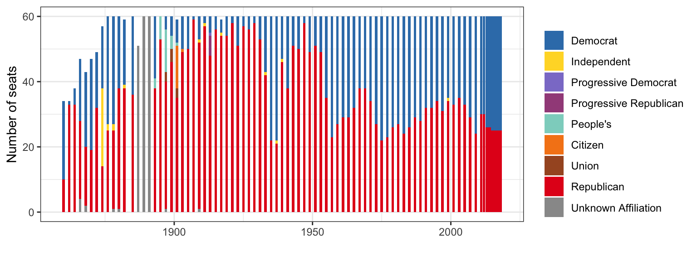
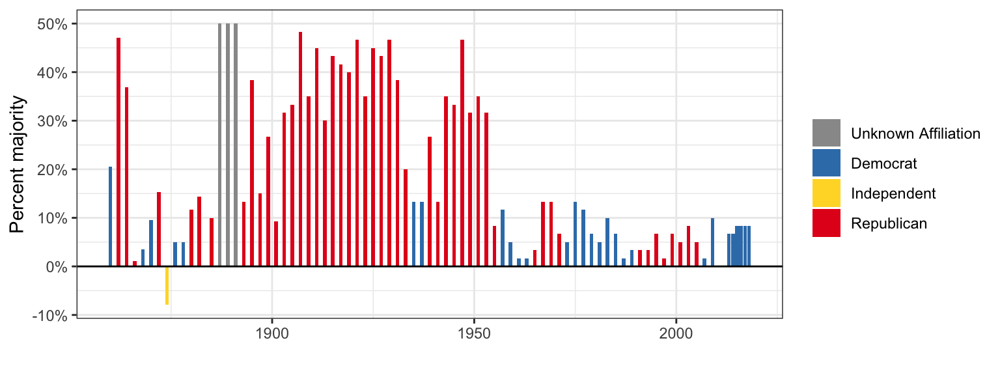
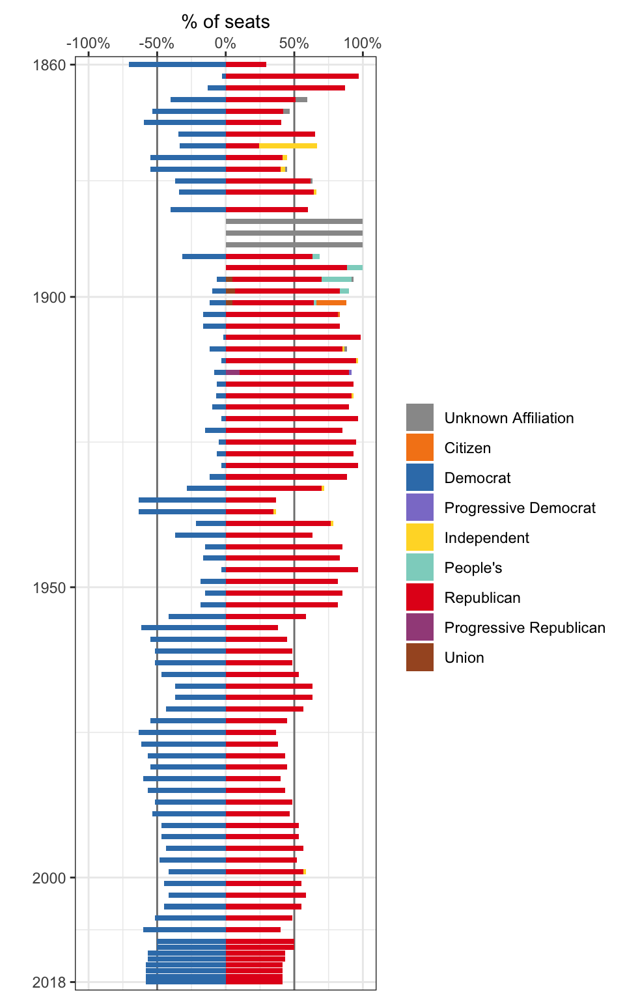
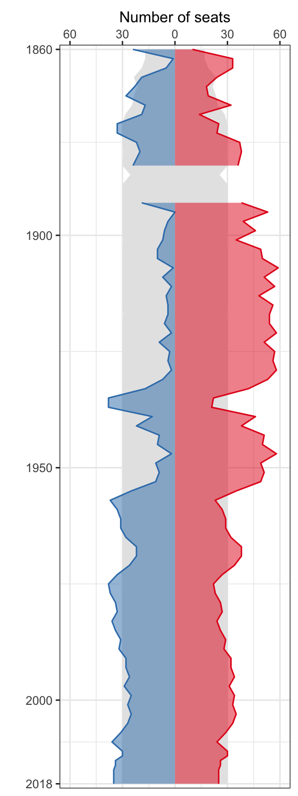
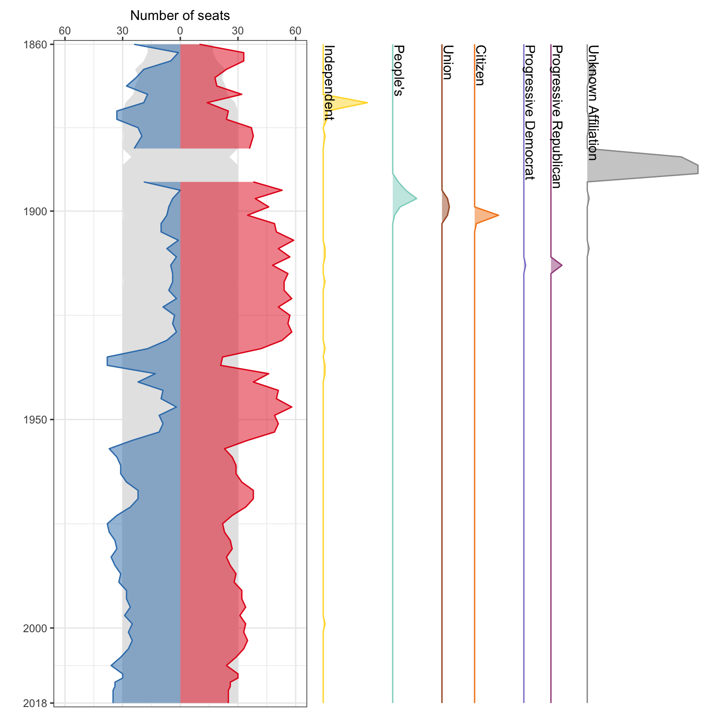
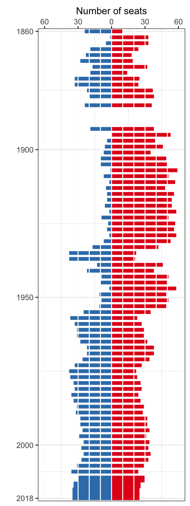
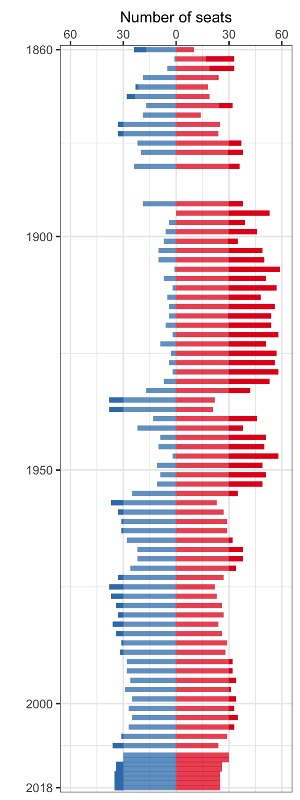

Regular sessions since statehood, only includes first holder of each seat. Useful as a check on data. Notice early sessions don’t have 60 legislators.


Hard to know where to put other parties:

Use number of seats (not percentage), only two major parties, use area instead of bars.

Include other parties separately

Use bars with discrete steps of 10 seats to allow easy counting:

